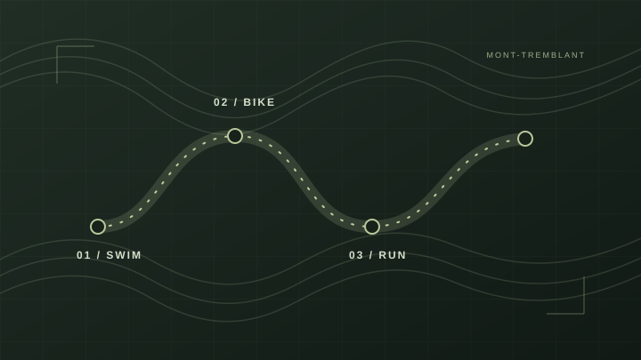
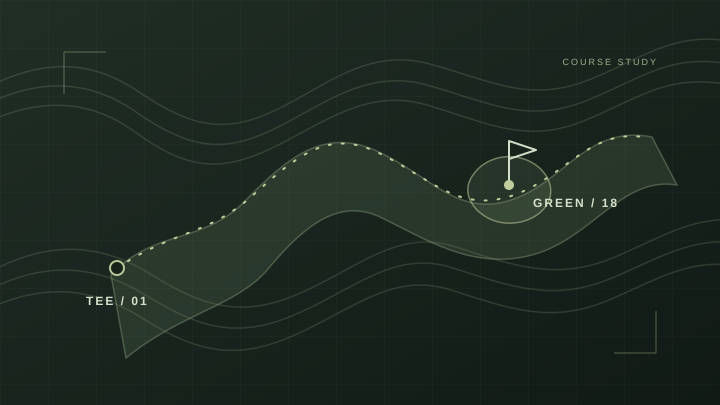
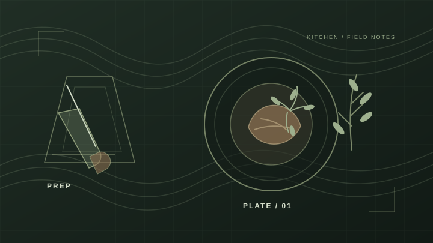
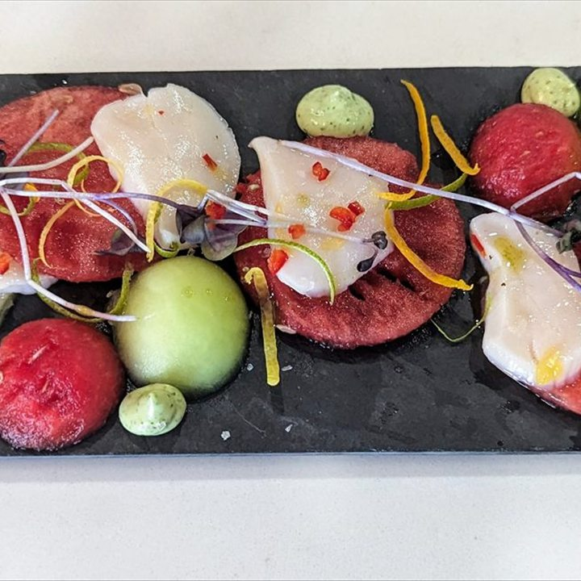
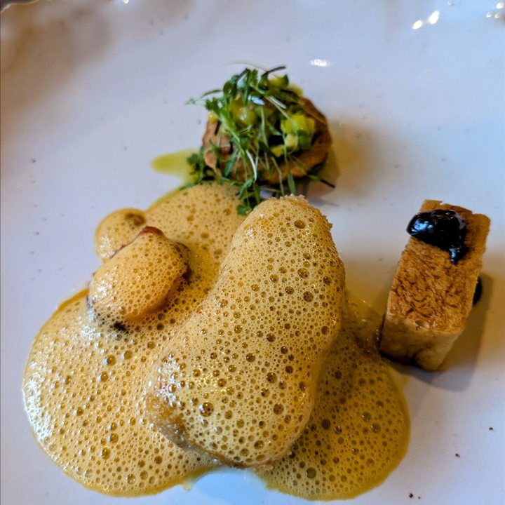
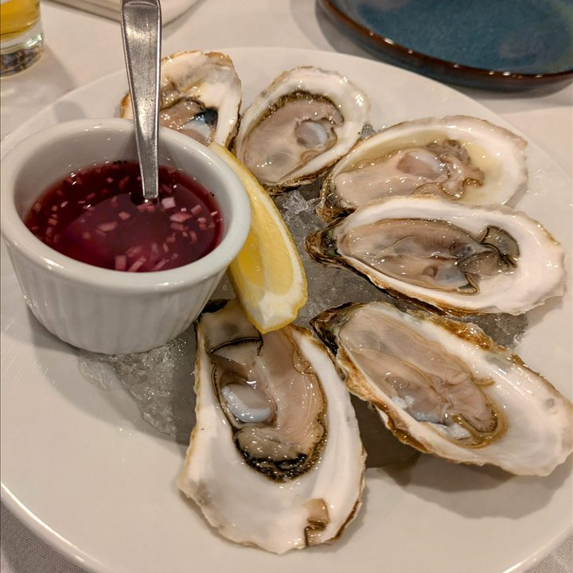
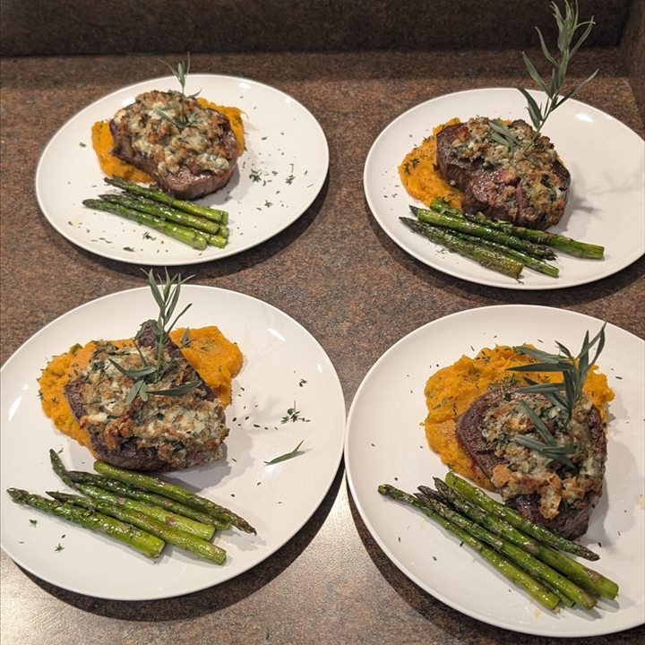
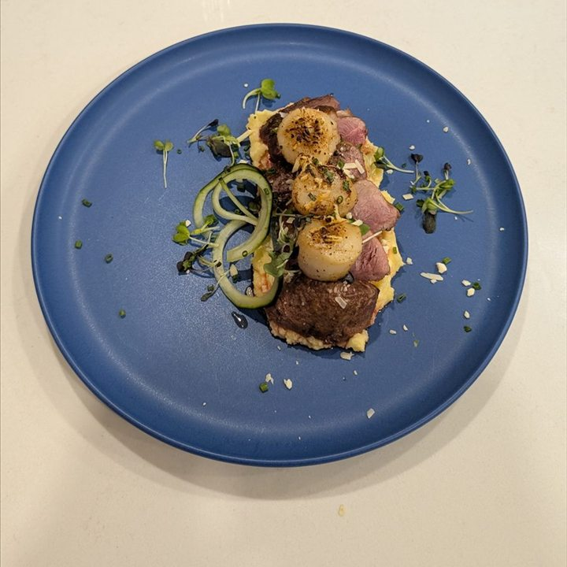
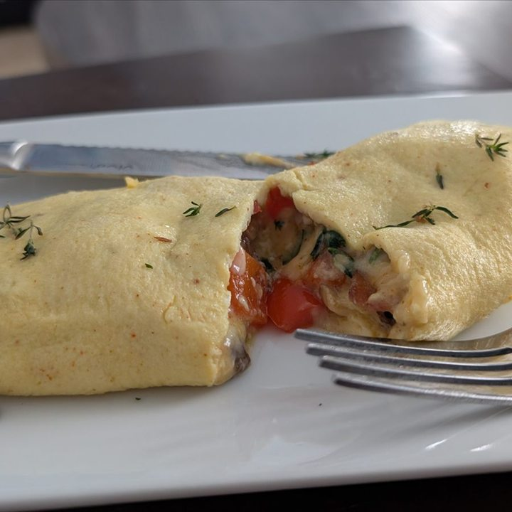
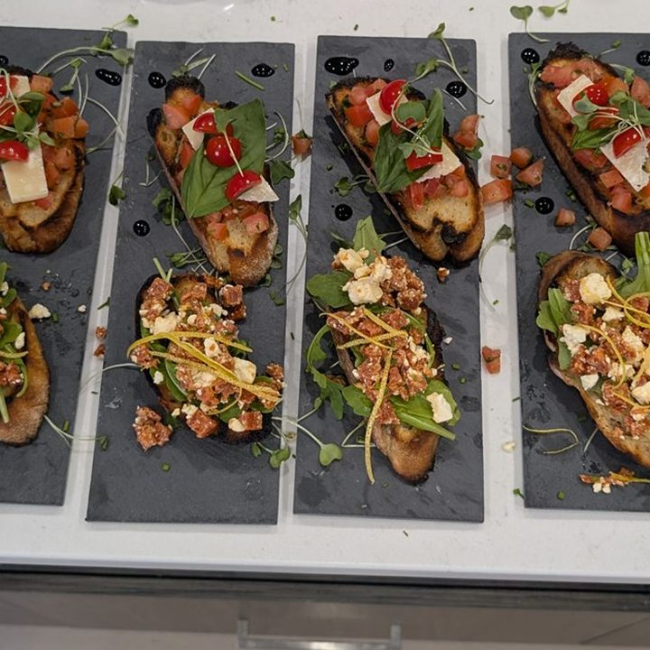

Triathlon
Triathlon
Swim, bike, run: training, race days, and lessons along the way.
A little bit of everything
From race days to the kitchen, explore some of the interests that make up Jopism.

On the course
Golf is my passion, click here to find out why
See golf summary
In the kitchen
Recipes, experiments, and good things made at home.
A little about cooking
Triathlon
Swim, bike, run: training, race days, and lessons along the way.
A look at the gear I use
In the kitchen
A place for recipes I enjoy, things I’m learning to make, and kitchen experiments worth repeating.
Browse the cookbook Explore recipes, ingredients, and cooking notesA few snapshots from meals and kitchen experiments.







Golf summary
Based on the best 4 differentials from my last 12 rounds, played from the white tees.
Tracked with Arccos GolfI use Arccos smart sensors and its AI caddie on every round. Strokes gained (SG) compares each part of my game to a scratch golfer: Driving, Approach, Short game, and Putting.
Race results
The latest from the leagues
NFL and NHL scores plus the PGA Tour leaderboard, refreshed every minute.
Loading NFL scores…
Loading NHL scores…
Loading PGA Tour leaderboard…
Scores and leaderboard data by ESPN.